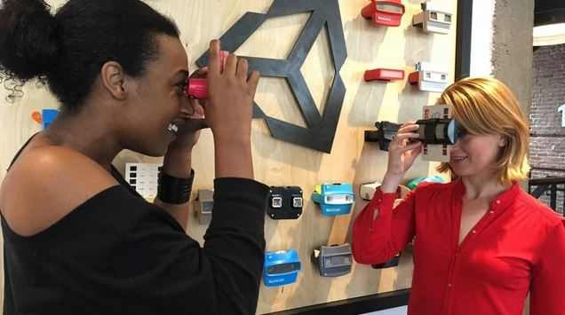

Healium A New Medium for Meditation
Healium
Healium is a new kind of meditation channel powered by visual, biometrically controlled- content, allowing users to harness the power of their biometrics to heal virtual and augmented reality environments.
Learn more 👇WebsiteHealium XR from StoryUP Studios on Vimeo.
Snapshot
Intent
To teach humans that our thoughts have power.
Made By
Status
Product released, Raising Funds
The Story
Healium is a new kind of meditation channel powered by visual, biometrically controlled- content, allowing users to harness the power of their biometrics to heal virtual and augmented reality environments.
How It Works
Use your brain's positive vibes to hatch butterflies from a chrysalis. Works with a 2016 or later Muse brain-sensing headband including Muse 2. Gamma asymmetry is associated with feelings of positivity, love, joy, and appreciation. Recall a happy memory and try to keep that brain pattern (blue wavy line) above the red reference line to see butterflies fly out of the chrysalis. If you have a flat blue line, that could be forehead tension. Take a few deep breaths and relax.
Healium stories are metaphors that your thoughts have power not only in the virtualworld but the real world as well. This AR self-awareness experience is not meant tobe a treatment, therapy replacement, or diagnostic tool for any kind of mentalhealth disorder.
Inspiration
An interview with StoryUP founder and CEO, Sarah Hill.
Hey, Sarah! What motivated you to create Healium? What impact do you want to make?
The news we all consume on a daily basis is making us sick and breeding generations of anxious people. Healium is a way to balance your media diet by using your feelings as a remote control to shift your own internal narrative.
Veterans led us to create Healium. We had built VR films and AR livestreams foraging Veterans to virtually visit their memorials. We noticed the experiencesappeared to be affecting their physiology in a beneficial way. We decided to studyour experiences’ effects on brain patterns.
We found in a handful of studies our content appeared to reduce fast activity inthe brain associated with moderate anxiety in as little as four minutes. This wasan important data point for me as I used to be a TV Journalist who covered a lot oftrauma and as a result, I suffered panic attacks. I recovered thanks toneurofeedback but found the software and traditional meditation boring. Healium isa portable, digital chill pill for me and the millions of others who meditate orstruggle with traditional meditation.
Why VR?
We do clinical testing on much of our content and it’s eye-opening to see how VRaffects brain patterns. VR is more emotionally engaging and it creates uniquememories than flat media. All of this has been well-documented in a variety ofstudies on immersive media from the Knight Foundation to Google News Labs. VRenables not just storytelling but “story living”. Soon, we will release the resultsof a study on how AR affects the brain compared to VR.
2018
-
Secured licensing deal that will put Healium on 28 airlines for passengers of long-haul flights VR experiences
-
Featured at film festivals around the world including Cannes and SXSW
-
Enabled thousands of aging Veterans to virtually visit their memorials using Healium
Research
VIRTUAL REALITY FOR ANXIETY REDUCTION DEMONSTRATED BY QUANTITATIVE EEG: A PILOT STUDY
July 2018 | Frontiers
COMBINING FRONTAL GAMMA ASYMMETRY NEUROFEEDBACK WITH VIRTUAL REALITY: A PROOF OF CONCEPT CASE STUDY
June 2018 | NeuroMeditation Institute
HEALIUM: YOUR BRAINWAVES AS A VR INPUT
October 2017 | StoryUP Studios
Seeking Funding
We are growing Healium’s sales channel partners. If you care about stressmanagement for your employees, your students, family members, or your corporateclients…we want $(.tab-paneto show you our product which is meditation evolved.
Follow Project
Healium A New Medium for Meditation
Root VR
Root VR is a VR-based platform of therapy, education, and training tools for children, parents, and professionals in the foster and adoptive care communities.
Learn more 👇WebsiteSnapshot
Intent
To allow children from adverse home environments to better adapt to change.
Made By
David Waltenbaugh, Jeff Rimmer
Available On
Not available (yet!)
Status
Research & Development, Pre-seed
The Story
What is Root VR?
Root VR is a virtual reality-based platform of therapy, education, and training tools for children, parents, and professionals in the foster and adoptive care communities. As of late 2018, Root VR is a pre-seed company currently in a research and development stage, with the hopes of having a well-researched, clinically- and professionally-informed beta testing platform available in the second half of 2019.
How it All Started
An interview with Root VR co-founder, David Waltenbaugh
Hey, David! What motivated you to create Root VR?
Jeff Rimmer, my co-founder, grew up in an abusive home and was placed in foster care at the age of 12. Having experienced these harsh realities and realizing that he is a rare success story, Jeff has long fought for justice, care, and support for children in the foster care system.
I was diagnosed with generalized anxiety and depression as an adolescent, but fortunate to have had the resources to support myself through the periods of darkness in my life. Now comfortably able to understand and manage my own health needs, I feel compelled to support others who may be experiencing the isolation, fear, and hopelessness that frequently coincide with mental health disorders.
The realities of the present state of foster care system are evident in even a small handful of the long-term outcome statistics:
20% will become homeless after age of 18
25% will experience PTSD
3% will go on to earn a college degree
Why are you using VR?
Research evidence dating back to the 1990s suggests that virtual reality offers a significant opportunity to improve health-based outcomes relative to traditional therapy treatments as well as learning, information retention, and empathy compared to traditional education media. While VR is a young and burgeoning new technology leaving much to be researched and understood, the growing canon of evidence of VR’s revolutionary power to heal and educate in incredibly effective and entirely new ways is too compelling to ignore.
placeholder
2019
During the next few months we hope to conduct a significant amount of research alongside clinicians, caseworkers, parents, and children in the foster care and pediatric healthcare systems in an effort to ensure that our early prototypes are as informed and effective as possible. Depending on the research results, we hope to have a beta platform available for testing, analysis, and revision during the second half of 2019.
Next 5 years...
We hope to not only have our standard platform deployed to households around the world, but also to have Root VR partner with clinicians, agencies, and state and federal governments in providing our services at an even larger scale.
In progress! Follow Root VR for updates.
Research Partnerships
We’re looking to partner with individuals and organizations associated with foster and adoptive care and the fields pediatric healthcare, psychology, and education.
Developers
Specifically those with VR experience!
Early stage investors
We are engaging in discussions with potential investors and expect our capital requirements to grow substantially over the next twelve to eighteen months. Root VR has been entirely funded by its founders to-date, but we are exploring options for seed and early-stage venture funding that would allow us to meet our goals and deliver our platform more quickly and effectively without compromising the long-term viability of our vision.
Follow Project
Teachers Lens A New Medium for Meditation
Snapshot 🔍
Intent
Restore equity in the classroom using evidence-based training simulations.
Made By
Clorama Dorvilias
Available On
Status
Product released, Seeking customers
The Story 📖
In A Nutshell
NEEDS COPY!!! Healium is a new kind of meditation channel powered by visual, biometrically controlled- content, allowing users to harness the power of their biometrics to heal virtual and augmented reality environments.
How It Works
Inspiration
An interview with Teacher's Lens founder and creator, Clorama Dorvilias.
Hey, Clorama! What motivated you to create Teacher’s Lens?
I really wanted to change the learning experience for diversity and inclusion training–geared towards more positive engagement and measurable impact. Currently, bias training solutions are not held to accountability to have a measurable impact. Traditional bias training uses a lecture-styled approach with often role-playing exercises that can be uncomfortable, guilt-inducing, and leave a lot to be desired in terms of practical takeaways for workers to implement real cultural change. We believe that these investments should have a visible return that’s been promised by decades of research for workplaces that demonstrate healthy diversity and inclusion traits.
By creating our product and making it accessible, we hope that the industry will start to innovate on these approaches and look towards more research-driven methods towards their goals.
Why are you using VR?
When I was undertaking my Master’s in Interaction Design in 2015, my experience with an assistant professor made it clear that there was little faith in my technical abilities. The interactions that followed throughout the course began to harm my own self-esteem and my morale in my personal pursuit to learning and striving towards my own educational and professional goals in the tech industry. I didn’t realize early on that my being a ambitious women of color was the main driver behind his behavior, until it became really clear during the middle of the course.
At this point, I decided I would use my research thesis to better understand this psychological behavior between me and the professor. It was during the research that I learned about how common this situation was and learned terminology that described my experiences like ‘microaggressions’ and ‘unconscious bias’. They were actually coined by a psychology professor at Harvard decades ago after counseling African-American students where he noticed a pattern of complaints about these ‘micro-insults’ and how it was impacting their mental health on campus.
2017
- Funded by Oculus Launchpad
2018
- Launched on Oculus Store
- Achieved 2000 downloads within a few months
- Built an amazing team of women
Research
Seeking
- Angel investment
- Looking for help with research assistance
- Looking for Mentors with pilot experience who can help the team deliver this product towards optimal success
Follow Project
Healium A New Medium for Meditation
VR School Study
Using virtual reality in real classrooms to understand its impact
Learn more 👇Website
Snapshot
Intent
To understand the impact of the technology on student learning and teacher pedagogy.
Made By
Erica Southgate, Dr Jill Scevak, Shane Saxby, Jivvel Kihlman, Amy Worth, David Summerville, Chris Cividino, Graham Eather, Louise Rowley, Gillian Manning
Available On
Status
Ongoing Research
The Story
About
The VR School Study is a website and initiative exploring how to integrate VR into real classrooms in low income and rural school communities in an authentic way. By ‘authentic’, we mean taking VR out of controlled experimental and clinical settings and working with teachers, using a participatory research model, to investigate how best to use the technology in ways which suit the learner and the classroom environment.
Inspiration
An interview with Erica Southgate, researcher for VR School Study.
Hey, Erica! To begin, could you provide us with a little background on yourself?
I am a researcher and teacher educator interested in how technologies can enhance learning for students of all ages, and particularly for those students facing life challenges.
What got you interested in VR?
I started getting interested in VR and its potential to promote deep learning and student engagement in two ways Firstly, I am a serious computer games developer.With my colleague, Shamus Smith, I have developed a series of computer games designed to assist school and university students to improve develop their literacy. Developing computer games for learning got me interested in the intersection between learning theory and gamification, and to the intriguing possibilities of virtual worlds for education.
The first time I put on a head mounted display and toured a virtual environment, I became convinced that immersive technologies would play a key role in the future of schooling, especially if we could bring the fun of games into the equation. The second motivating factor relates to my long standing interest in equity and ethics in education.
How did VR School Study start?
After attending a VR conference, which had a technical focus, I became interested in the often overlooked ethical dimensions of using such a powerful experiential technology with children and young people, especially in natural settings such as schools which are not like the controlled contexts of computer or clinical labs. I set out to explore the ethical and safety implications of using VR in schools in a systematic way so that teachers and students could be empowered to deploy the technology without harm especially from a child development perspective. And so, the VR School Study was born.
What perspective do you bring to the VR community?
I am from a generation where few women played computer games and my working class family couldn’t afford and certainly did not grasp (all those decades ago) the importance of having a computer in the home for leisure or learning. So I took the leap into VR and other learning technologies later in life. This late arrival is a good thing because I come to immersive technologies with the wonder of a child combined with decades of empirical research experience and philosophical nous.
Research
Questions
The VR School Study shares evidence-based research and articles on the following questions:
- How do students and teachers experience VR in their classrooms?
- How can we use this type of technology safely and ethically in schools?
Articles
VIRTUAL REALITY FOR ANXIETY REDUCTION DEMONSTRATED BY QUANTITATIVE EEG: A PILOT STUDY
July 2018 | Frontiers
COMBINING FRONTAL GAMMA ASYMMETRY NEUROFEEDBACK WITH VIRTUAL REALITY: A PROOF OF CONCEPT CASE STUDY
June 2018 | NeuroMeditation Institute
HEALIUM: YOUR BRAINWAVES AS A VR INPUT
October 2017 | StoryUP Studios
Seeking Community
We are looking to connect wtih teachers, scholars, and developers interested in immersive learning in schools.
Follow Project
Ballard VR Club A New Medium for Meditation

Snapshot
Intent
To give high school students access to technology.
Organizer
Location
Seattle, WA
Status
Product released, Raising Funds
The Story
What We're About
Ballard VR (BVR) Club is Ballard High School's Immersive Technology club. Founded in 2017, BVR has grown rapidly. We have about 20 regular members at a given meeting and received around 30 HMD’s from Oculus in 2018.
Inspiration
An interview with founder of Ballard VR Club, Avery Wagar.
Hey, Avery! What motivated you to start BVR club?
I was motivated to start BVR Club because of the lack of people my age in the VR community. VR really affected my life and I wanted to share that with other people.
What impact do you want to make in schools?
We believe that VR can be a phenomenal tool in teaching, no matter the subject. Being able to experience history leaves a much more lasting impression than reading about it in a textbook.
How did you discover VR?
My first experience in VR was while I was taking a Unity3d development class. After the class, an instructor helped me put my game into VR. I later went to a VR Hackathon and joined a student team.
2018
-
Grew the VR club to twenty regularly attending students
-
Recieved 30 VR headsets from Oculus
Follow Project
We Make Reality. Together.
We're gathering creators, artists, researchers, and explorers to discover the potential of emerging technologies like virtual, augmented, and mixed reality (XR). We'd like your help to build a home for this community. One where anyone, whether just starting or already out in the wild, can showcase their work and share insights or reflection along the way.
Explore Projects and Research 👇
We Make Reality. Together.
We bring together the creators, artists, researchers, and explorers to discover what's possible with mediums like virtual, augmented, and mixed reality. This is a corner of the internet where anyone, whether they’re just starting out or already out in the wild, to showcase their work and share insights along the way.
Help us build this home 🏠
Submit your email to receive updates, get involved, and hear when we launch.